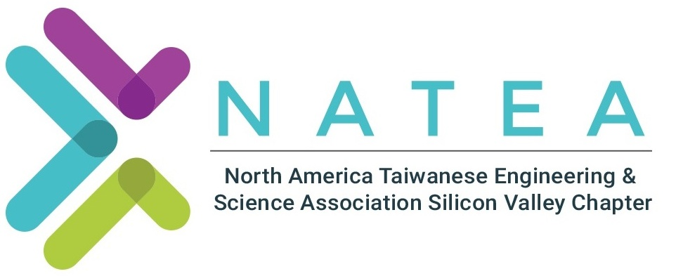
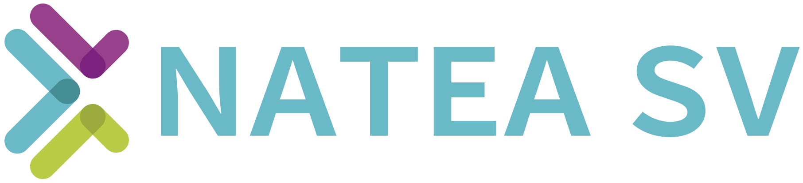

Students & Emerging Talent
Join a team, build a portfolio, and strengthen your ability to solve real problems.
Explore this role →A PECULAB INITIATIVE · TAIWAN + SEATTLE + BEYOND
We connect students, professionals, educators, and companies to build and test AI solutions for real business challenges. Starting with Taiwan and Seattle, we welcome collaborators across campuses, industries, and regions.
發起真實挑戰，串聯跨域人才，讓 AI 實作產生可驗證的成果。
Initiated by PecuLab · Building our first pilot with collaborators
WHY THIS BRIDGE EXISTS
Emerging talent needs opportunities to work beyond the classroom. Companies need a practical way to explore AI with people who understand their challenges. Educators and experienced professionals can help connect the two.
Taiwan–Seattle Bridge brings these contributions together through focused projects, mentor feedback, and shared evidence of what works.
Our first commitment is a small project with a clear outcome. Further study, company adoption, career opportunities, or venture development can follow the evidence and separate agreements.
HOW IT WORKS
A challenge owner defines the context, intended outcome, data boundaries, and a person available for feedback.
Match students and professionals with educators, mentors, and regional connectors. Agree on roles and realistic time commitments.
Research, prototype, and document decisions. Use small tasks and scheduled feedback rather than open-ended commitments.
Share the brief, prototype or analysis, validation record, and lessons. Decide together whether another phase is worthwhile.
FIRST PILOT · PILOT IN DEVELOPMENT
A real business question from Benjamin C.H. Huang, founder of Ownership Code. This first pilot is a working example of the collaboration format—not a promise of business results.
Pilot in development · Schedule to be announced
Benjamin also proposed studying selected reference brands and one platform to develop a content strategy, reviewable drafts and a feedback cycle. This is a possible next scope, not a second confirmed project or a promised level of exposure.
FIND YOUR ROLE
You can wear more than one hat. Tell us what you can contribute, where you are, and how much time is realistic.
Join a team, build a portfolio, and strengthen your ability to solve real problems.
Explore this role →Bring your experience and explore practical AI applications and new directions.
Explore this role →Bring one meaningful business question, context, and someone who can give feedback.
Explore this role →Offer technical, industry, or product feedback at agreed checkpoints.
Explore this role →Connect courses, students, research, and meaningful ways to assess learning.
Explore this role →Connect local communities and help with recruitment, collaboration, and demos.
Explore this role →Support tools, compute, venues, student participation, or program operations.
Explore this role →PEOPLE & CONTRIBUTIONS
People already listed in the bridge network, with room for others to help shape the pilot. Contributions and time commitments are agreed per project.

PecuLab LLC
Can help with: learning design · project scoping · collaboration coordination
Shaping the first Taiwan–Seattle pilot and a practical way for people across regions to build together.
About Pecu →Institution and company logos identify individual affiliations or the linked resource. They do not establish organizational sponsorship, endorsement, or a program partnership. Contribution topics below are invitations for discussion, not confirmed assignments.

Founder, OLONS
MS Computer Engineering, University of New Mexico (2020)
Building OLONS Proto, an AI advisor that learns your business in one conversation, then builds your website live.
Potential contribution to confirm: Business context · AI product prototypes
Network participant · project role and availability to be confirmed

Founder, Refine
AI-powered corporate training through adaptive 6-minute AI simulation lessons that turn company knowledge into execution.
Potential contribution to confirm: Learning design · applied AI
Network participant · project role and availability to be confirmed

Founder & CEO, Quantum Ready
Enterprise AI and data architecture
Bringing advanced AI, quantum-inspired methods, and modern data platforms into practical business applications.
Potential contribution to confirm: Enterprise AI · data architecture
Network participant · project role and availability to be confirmed

Applied Research Scientist, Meta
Computer science PhD; National Taiwan University alumnus
10+ years in computer vision, face recognition, and deep learning, bridging research and industry.
Potential contribution to confirm: Computer vision · research evaluation
Network participant · project role and availability to be confirmed

Software Engineer, Google
Greater Seattle Area
Educational background at the University of Washington.
Potential contribution to confirm: Software engineering · technical review
Network participant · project role and availability to be confirmed

Founder & CEO, ALUVA
US–Asia entrepreneurship, strategy, and industrial AI
Over 20 years building ventures and leading global programs, including at Microsoft, across the U.S. and Asia. ALUVA captures expert know-how and delivers cited guidance for semiconductor, defense, aerospace, and advanced manufacturing teams.
Potential contribution to confirm: Industry context · venture strategy
Network participant · project role and availability to be confirmed

Enterprise Agentic AI for Accounting, Amazon
AWS Certified AI Practitioner; National Taiwan University alumna
Builds enterprise accounting AI solutions for anomaly detection, reconciliation, and financial close workflows. Combines finance expertise with AI product strategy, governance, and human–AI collaboration.
Potential contribution to confirm: Accounting AI · evaluation and governance
Network participant · project role and availability to be confirmed

Founder, Ownership Code
Industry mentor & project contributor · Acton, Massachusetts
Experience in business acquisitions, private equity, leveraged buyouts, business scaling, and biomedical technology commercialization. Contributing real business questions on AI-assisted customer acquisition and brand growth for student teams to explore.
Potential contribution to confirm: Challenge framing · business feedback
Network participant · project role and availability to be confirmed

Software Engineer (AI/ML), AWS Neuron
Seattle, Washington; University of California San Diego alumnus
Expertise in machine learning systems, LLM model serving, MLOps, computer vision, and robotics.
Potential contribution to confirm: ML systems · prototype deployment
Network participant · project role and availability to be confirmed

Associate Professor of Computer Science, Purdue University Fort Wayne
Director, Purdue Quantum AI Security Lab; member of the Purdue Quantum Science and Engineering Institute
Quantum computing and AI: quantum machine learning, optimization, cybersecurity, and responsible quantum technology. Founder of MindGPA.

Potential contribution to confirm: AI research · technical review
Network participant · project role and availability to be confirmed

Professor of Physics, University of Washington
Adjunct Professor of Electrical & Computer Engineering; Director, NSF HDR Institute A3D3
Experimental particle physicist working on real-time AI for data-intensive scientific discovery.

Potential contribution to confirm: Research-to-prototype · scientific AI
Network participant · project role and availability to be confirmed

Faculty, School Psychology, Central Washington University
School psychologist; research in classroom management, social-emotional measurement, and ADHD. Former teacher in Taiwan and Fulbright recipient.
Potential contribution to confirm: Campus connections · learning design
Network participant · project role and availability to be confirmed

Assistant Professor, Department of Kinesiology, Seattle University
Biomechanist (PhD, Boston University) using high-precision movement tracking and medical imaging to explore therapies for musculoskeletal conditions. Trained in Taiwan.
Potential contribution to confirm: Campus connections · learning design
Network participant · project role and availability to be confirmed

Dean, School of Business, Engineering and Technology, Saint Martin's University
Professor of Business
D.Sc. in Engineering and Technology Management from George Washington University; M.A. in Economics from the University of Maryland; B.A. in Economics from National Taiwan University.
Potential contribution to confirm: Campus connections · learning design
Network participant · project role and availability to be confirmed

Electrical Engineering student, University of Toronto
Undergraduate Student Researcher, PECULAB LLC
Research experience in quantum machine learning, comparing QLSTM and Recursive QLSTM for short-horizon temperature forecasting. Presented the research at IEEE Quantum Week 2026.
Potential contribution to confirm: Student collaboration · project contributions
Network participant · project role and availability to be confirmed

Informatics (Data Science) student, University of Washington
Business minor
Focuses on data analysis, visualization, and AI applications to support smarter business and product decisions.
Potential contribution to confirm: Student collaboration · project contributions
Network participant · project role and availability to be confirmed

Engineering student, University of Washington
Graphic Design / Public Relations Officer, Taiwanese Student Association
Experience in robotics engineering and programming, research on health topics, and student community engagement. Co-founded The Warning Sign to promote health awareness in schools.
Potential contribution to confirm: Student collaboration · project contributions
Network participant · project role and availability to be confirmed
OPEN ROLES · HELP BUILD THE FIRST PILOT
Welcome newcomers, connect time zones, and help contributors find a first small task.
Discuss this role →Track scope, blockers, feedback checkpoints, and the evidence a team needs to deliver.
Discuss this role →Connect a local community or campus; discuss what your region can realistically support.
Discuss this role →A WIDER NETWORK · OPEN TO COLLABORATION

Collaboration framework under discussion
We are discussing possible collaboration with NATEA headquarters and relevant regional communities. Roles, program naming, participating chapters, and resource commitments have not been finalized. Taiwan–Seattle Bridge is currently initiated and coordinated by PecuLab.
NATEA’s published mission connects applied science and engineering with career development, entrepreneurship, youth participation and Taiwan–North America exchange. The links below are ways to learn about that wider ecosystem.
Read NATEA’s mission
Explore the chapter’s official site, community activities and announcements.
Explore official resourceExplore the forum’s technical discussions, agenda and program resources.
Explore official resourceDiscover entrepreneurship discussions and the published Startup Day program.
Explore official resourceA directory of technology communities and related resources curated on NATEA’s site.
Explore official resourceRead the publication and article-contribution information on the official site.
Explore official resourceFind event listings from NATEA-SV’s linked event host. Check the host for current details.
Explore official resourceExternal resources are independently operated. Displayed marks identify their owners; listing a resource does not announce a Bridge partnership.
JOIN THE WORKING COMMUNITY
Meet collaborators, explore project briefs, share progress, and get feedback as you build.
We are preparing the working community and newcomer guidance. Request an invitation below; we will follow up when the first working space and host are ready.
Proposed rhythm: asynchronous progress updates, mentor checkpoints, and demos, with timing agreed by each team. Discord is for collaboration; repositories hold versioned work; only approved outcomes appear publicly.
FUTURE OPPORTUNITIES
Cross-region exchanges, additional company challenges, internships, or venture exploration may follow a successful pilot. Dates, costs, academic credits, participating schools and any employment arrangements require separate confirmation.
Read the exchange proposal →Community interest
This is the existing four-category Sheet tally and may include initial estimates. It is not a count of confirmed participants or partner organizations. A multi-role registration is counted once under its first selected role.
TAKE THE FIRST STEP
Choose one or more roles. Tell us your city, time zone, available time and resources. We will follow up to explore a manageable first contribution.
Submitting this form registers interest; it does not confirm membership, a project place, a school partnership, or an institutional endorsement.